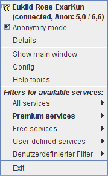

The
Anonym-O-Meter TOC
The
Anonym-O-Meter TOC  Usage JonDo commandline arguments
Usage JonDo commandline arguments The
Anonym-O-Meter TOC Usage JonDo commandline arguments

JonDo's Mini View is a minimalist view of JonDo's main window. You can
access it by pressing  or by double clicking anywhere in the main window. It shows only the most
important information and consists of the following elements:
or by double clicking anywhere in the main window. It shows only the most
important information and consists of the following elements:
 button that switches back to normal
view (double clicking the window will work too).
button that switches back to normal
view (double clicking the window will work too).
You can access the most important functions in JonDo from the context menu. The context menu is opened by clicking right in the main interface, the Mini View or on the small icon in the windows panel.